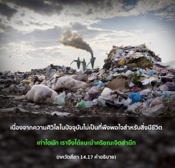
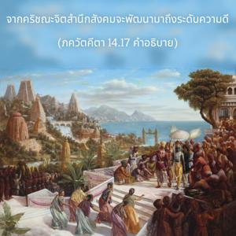
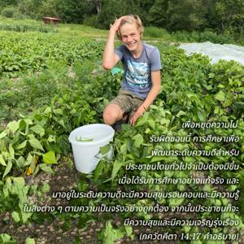

จากระดับความดีพัฒนาความรู้ที่แท้จริง จากระดับตัณหาพัฒนาความโลภ และจากระดับอวิชชาพัฒนาความโง่เขลา ความบ้าคลั่ง และความหลง



เนื่องจากความศิวิไลในปัจจุบันไม่เป็นที่พึงพอใจสำหรับสิ่งมีชีวิตเท่าใดนักเราจึงได้แนะนำกฺฤษฺณจิตสำนึก จากกฺฤษฺณจิตสำนึกสังคมจะพัฒนามาถึงระดับความดี เมื่อระดับความดีพัฒนาขึ้นผู้คนจะเห็นสิ่งต่างๆตามความเป็นจริง ในระดับอวิชชาผู้คนก็เหมือนกับสัตว์เดรัจฉานไม่สามารถเห็นสิ่งต่างๆชัดเจนนัก ตัวอย่างเช่น ในระดับอวิชชาจะไม่เห็นว่าจากการฆ่าสัตว์ตัวหนึ่งเป็นการเปิดโอกาสให้สัตว์ตัวเดียวกันนั้นมาฆ่าตนในชาติหน้า เนื่องจากไม่ได้รับการศึกษาในความรู้ที่แท้จริงพวกเขาจึงไม่รับผิดชอบ เพื่อหยุดความไม่รับผิดชอบนี้การศึกษาเพื่อพัฒนาระดับความดีสำหรับประชาชนโดยทั่วไปจึงจำเป็นต้องมีขึ้น เมื่อได้รับการศึกษาอย่างแท้จริงและมาอยู่ในระดับความดีจะมีความสุขุมรอบคอบและมีความรู้ในสิ่งต่างๆตามความเป็นจริงอย่างถูกต้อง จากนั้นประชาชนก็จะมีความสุขและมีความเจริญรุ่งเรือง ถึงแม้ว่าคนส่วนใหญ่ไม่มีความสุขและไม่เจริญรุ่งเรือง หากส่วนหนึ่งของประชากรพัฒนากฺฤษฺณจิตสำนึกและสถิตในระดับความดีจะก่อให้เกิดความสงบและความเจริญรุ่งเรืองทั่วโลก มิฉะนั้นหากทั่วทั้งโลกอุทิศตนให้กับระดับตัณหาและอวิชชาก็จะไม่มีความสงบหรือความเจริญรุ่งเรือง ในระดับตัณหาผู้คนมีความโลภและทะเยอทะยานเพื่อความสุขทางประสาทสัมผัสโดยไม่รู้จักพอ เราจะเห็นว่าแม้ผู้ที่มีเงินพอเพียงและมีการตระเตรียมเพื่อสนองประสาทสัมผัสเป็นอย่างดีเขาก็ยังไม่มีความสุข หรือความสงบภายในใจ เพราะว่าสถิตในระดับตัณหา หากเราต้องการความสุขเงินนั้นช่วยไม่ได้ เราต้องพัฒนาตนเองให้มาถึงระดับความดีด้วยการปฏิบัติกฺฤษฺณจิตสำนึก เมื่อปฏิบัติอยู่ในระดับตัณหาจะไม่เพียงแต่ไม่มีความสุขทางใจเท่านั้น แต่อาชีพและการงานก็จะเป็นปัญหาอย่างมากเช่นกัน เพราะต้องวางแผนและออกอุบายมากมายเพื่อให้ได้เงินมามากเพียงพอเพื่อรักษาสถานภาพของตนในสังคม เช่นนี้เป็นความทุกข์ ในระดับอวิชชาผู้คนบ้าคลั่ง และเนื่องจากอยู่ในสภาวะที่มีความทุกข์จึงต้องไปพึ่งยาเสพติด ดังนั้นจึงจมปลักลงไปในอวิชชามากยิ่งขึ้น อนาคตในชีวิตของคนพวกนี้มืดมนสิ้นดี